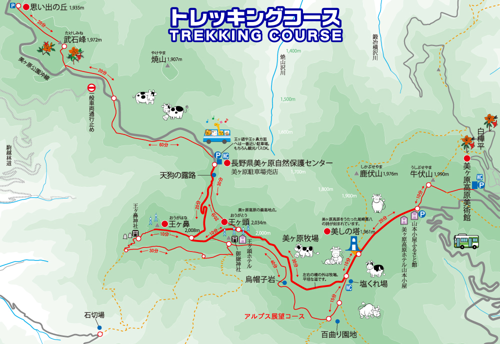
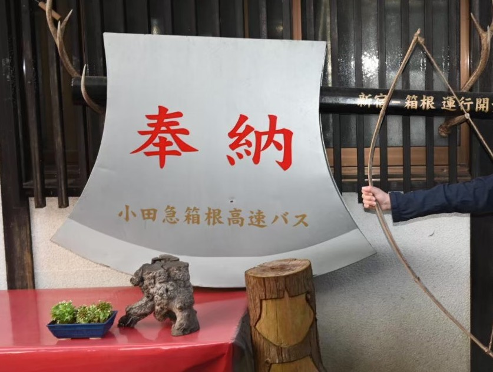

(群馬県 鳴神山山頂からの景色 ©puyarin)
初心者でも登りやすい！おすすめ登山スポット５選
目次
- もはやハイキング!?美ヶ原
- 東京のあの有名な山!高尾山
- 涼しくって気持ちいい!霧ヶ峰
- あの昔話のキャラクターに会える！金時山
- 大沼小沼がよく見える、絶景!赤城山・地蔵岳
(群馬県 鳴神山山頂からの景色 ©puyarin)
(手作り美ヶ原高原ジャム スタッフブログより引用)
引用元サイト美ヶ原は、八ヶ岳中信高原国定公園北西部にある長野県松本市、上田市、小県郡長和町にまたがる高原で、日本百名山の一つです。
最高峰は、王ヶ頭（2,034m）で、平坦かつなだらかな山頂が特徴です。
駐車場は長野県美ヶ原自然保護センターの売店を利用可能で、そこから王ヶ頭までは、なんと30分ほどで着きます。
(美ヶ原観光連盟公式サイトより引用)
引用元サイトスニーカーでもOK!
涼しい空気を味わいながら歩いてみてはいかがでしょうか。
(高尾山コース案内 ©puyarin)
都心からも電車で1時間程度でアクセスでき、また、駐車場もあるので埼玉県民もアクセスがしやすい山です！
ルートは全部で6つ。ケーブルカーやリフトもあるのでいざという時に使えます。
一番登山気分を味わえるのは、稲荷山コースですが、それでも山頂までは2時間ほど。
トイレも充実、ビジターセンターやお寺があったりと見どころ満載！観光地ですね。
(THE GATEより引用)
引用元サイト霧ヶ峰は長野県中部の茅野市、諏訪市、諏訪郡下諏訪町にまたがる火山であり、八ヶ岳中信高原国定公園内にあります。

(YAMAPのスクリーンショット ©puyarin)
駐車場から山頂の車山までは約40分ほど。
かなり整理された登山道で、傾斜もあまりきつくありません！
スニーカーでもOK!
長野県は距離がありますが、初夏の頃は涼しく気持ちがいいです！GWにぜひいかがでしょうか？
(金時山山頂 ©puyarin）
まさかりかついだ金太郎、で有名な金時山です。
箱根山の北西部に位置する標高1,212mの山で、日本三百名山の一つです。
金太郎伝説で有名な山であり、フォトスポットもたくさんあります。
(©puyarin）
コースタイムは1時間半～2時間で登山道も整備されています！
山頂からは芦ノ湖や箱根の山々がよく見えます。晴れていれば富士山も見えます！
登山靴の方が登りやすいですが、スニーカーでもOKです。
下山後は箱根や神奈川県を観光しちゃいましょう♪
(雪景色の地蔵岳山頂 ©puyarin）
最後にご紹介しますのは、赤城山の地蔵岳です！
関東地方の北部、群馬県のほぼ中央に位置する山です。その中の地蔵岳は標高1,674mで、山頂に複数の通信施設があるのが特徴です。
赤城山は日本百名山です！
地蔵岳は赤城山の峰々の中でも非常に登りやすいです。登山道には階段があり、整備されています。
コースタイムは1時間半くらいです。
小沼もよく見え、かなり景観もGOOD!
地蔵岳で赤城大沼、小沼を堪能しちゃいましょう！